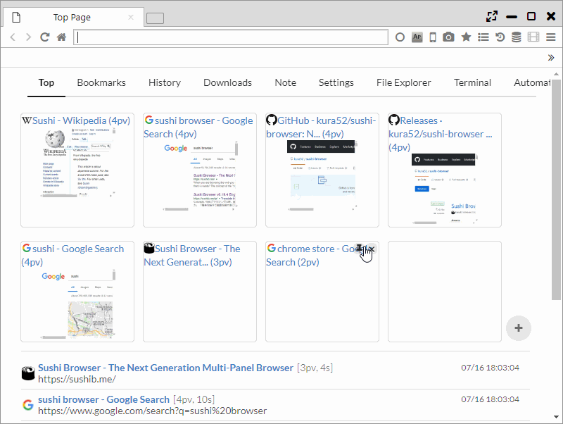

Top Page
On the top page, the links and speed dials to all the pages being managed and the latest history are displayed.
1. Speed Dial
The speed dial displayed on the top of the page shows the number of PVs in ascending order.
On each site, the X button and hairpin button are displayed. If you press the X button, the PV numbers will be cleared and removed from the speed dial displayed.
f you press the pin button , the display position will be fixed at the top. When you press the X button, you can return to normal and the links at the bottom will be shown.
At the bottom-right side of the speed dial is a + button which you can press to add a new site to the speed dial.
The added site will be kept in the top page folder of the bookmarks.

2. Other
-
When "Main Menu > Window SubMenu > Show bookmark bar on top page" is ON, only the bookmarks in the top page will be shown.
-
At the top of the page, the following management pages' links will be shown.
- Top Page
- Bookmarks
- History
- Downloads
- Note
- Settings
- File Explorer
- Terminal
- Automation
- Video Converter
-
At the lower part of the screen the latest browsing history is displayed.